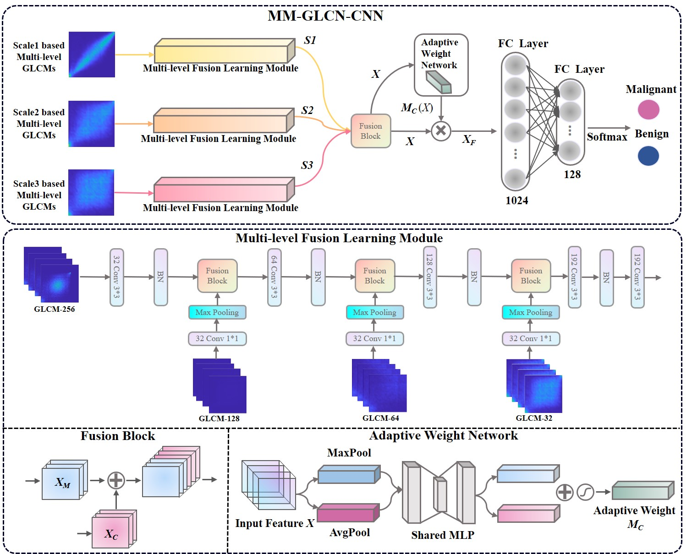

武晋茹

——2024届硕士研究生——

🔹🔹🔹🔹🔹 武晋茹 🔹🔹🔹🔹🔹

武晋茹，计算机学院2024届硕士研究生，师从张枢教授，中共党员，研究方向为计算机辅助诊断以及肿瘤图像分类。在校期间曾担任计算机学院研究生第九党支部宣传委员兼纪检委员。曾获吴亚军奖学金、一等学业奖学金、校优秀毕业生、校优秀研究生等奖励及荣誉。以学生第一作者发表两篇论文（1篇SCI二区，一篇EI会议），在投医学影像顶会一篇，作为共同作者参与并发表高水平论文7篇，申请并公开国家发明专利1项，参与西北工业大学研究生创新基金1项。毕业后，她将入职西安爱生技术集团有限公司，肩负“铸国之重器”的使命，继续发光发热。
毕业去向：西安爱生技术集团有限公司
毕业寄语：轻装策马青云路，人生从此驭长风。

· 研究方向
计算机辅助诊断，CT肿瘤图像分类
· 邮箱
· 代表论文
| 方法 | 题目 | 链接 |
|---|---|---|
 |
Shu Zhang, Jinru Wu, Sigang Yu, Ruoyang Wang, Enze Shi, Yongfeng Gao, Zhengrong Liang. A Bagging Strategy-Based Multi-scale Texture GLCM-CNN Model for Differentiating Malignant from Benign Lesions Using Small Pathologically Proven Dataset. Multiscale Multimodal Medical Imaging: Third International Workshop, MMMI 2022. | [PaperLink] |
 |
Shu Zhang, Jinru Wu, Enze Shi, Sigang Yu, Yongfeng Gao, Lihong Connie Li, Licheng Ryan Kuo, Zhengrong Liang. MM-GLCM-CNN: A Multi-scale and Multi-level based GLCM-CNN for Polyp Classification. Computerized Medical Imaging and Graphics, 2023. (under review) | [PaperLink] |
· 出版论文
[1] Shu Zhang, Jinru Wu, Sigang Yu, Ruoyang Wang, Enze Shi, Yongfeng Gao, Zhengrong Liang. A Bagging Strategy-Based Multi-scale Texture GLCM-CNN Model for Differentiating Malignant from Benign Lesions Using Small Pathologically Proven Dataset[C]//Multiscale Multimodal Medical Imaging: Third International Workshop, MMMI 2022, Held in Conjunction with MICCAI 2022, Singapore, September 22, 2022, Proceedings. Cham: Springer Nature Switzerland, 2022.
[2] Shu Zhang, Jinru Wu, Enze Shi, Sigang Yu, Yongfeng Gao, Lihong Connie Li, Licheng Ryan Kuo, Zhengrong Liang. MM-GLCM-CNN: A Multi-scale and Multi-level based GLCM-CNN for Polyp Classification, Computerized Medical Imaging and Graphics, 2023. (under review)
[3] Shu Zhang, Ruoyang Wang, Junxin Wang, Zhibin He, Jinru Wu, Yanqing Kang, Yin Zhang, Huan Gao, Xintao Hu, Tuo Zhang. Differentiate preterm and term infant brains and characterize the corresponding biomarkers via DICCCOL-based multi-modality graph neural networks. Frontiers in Neuroscience, 2022.
[4] Shu Zhang, Yanqing Kang, Sigang Yu, Jinru Wu, Enze Shi, Ruoyang Wang, Zhibin He, Lei Du, Tuo Zhang. Novel Two-Stage Multi-view Low-Rank Sparse Subspace Clustering Approach to Explore the Relationship Between Brain Function and Structure. Machine Learning in Medical Imaging: 13th International Workshop, MLMI 2022, Held in Conjunction with MICCAI 2022, Singapore, September 18, 2022, Proceedings. Cham: Springer Nature Switzerland, 2022: 191-200.
[5] Shu Zhang, Haiyang Zhang, Ruoyang Wang, Yanqing Kang, Sigang Yu, Jinru Wu. A Novel Multi-Modality Framework for Exploring Brain Connectivity Hubs Via Reinforcement Learning Approach. International Symposium on Biomedical Imaging (ISBI), 2022. (In Press)
[6] Enze Shi, Sigang Yu, Yanqing Kang, Jinru Wu, Lin Zhao, Weizhong Liu, Dajiang Zhu, Jinglei Lv, Tianming Liu, Xintao Hu, Shu Zhang. MEET: Multi-band EEG Transformer. IEEE Transactions on Biomedical Engineering (T-BME), 2023. (under Review)